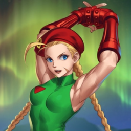

 Super Street Fighter II
Details
| Playtime | Not Played |
| Last Activity | Never |
| Added | 4/29/2025 6:52:10 |
| Modified | 5/1/2025 2:26:47 |
| Completion Status | Not Played |
| Library | Playnite |
| Source | |
| Platform | Nintendo SNES |
| Release Date | 9/14/1993 |
| Community Score | |
| Critic Score | 77 |
| User Score | |
| Genre | Arcade Fighting |
| Developer | Capcom Rozner Labs Software Group |
| Publisher | Capcom |
| Feature | Multiplayer Single Player |
| Links | PCGamingWiki HowLongToBeat StrategyWiki MobyGames Wikipedia |
| Tag | Direct control Pixel art Real-Time Side view |
Description
Super Street Fighter II: The New Challengers is a 1993 fighting game developed and published by Capcom for arcades. It is the fourth game in the Street Fighter II sub-series of Street Fighter games, following Street Fighter II Turbo (1992). It refines and balances the existing character roster from the previous versions, and introduces four new characters, including Cammy and Dee Jay. It is the first game on Capcom's CP System II hardware, with more sophisticated graphics and audio over the original CP System hardware used in previous versions of Street Fighter II.
Super Street Fighter II was ported to the Super Nintendo and Sega Genesis home consoles in 1994 followed by a number of computer platforms later. Super Street Fighter II was followed in 1994 by Super Street Fighter II Turbo, a fifth version of Street Fighter II, which further balances the characters and adds features.
Gameplay
Super Street Fighter II features the following changes from Street Fighter II: Hyper Fighting.
Graphics and audio
The HUD and all of the stages and character portraits feature new graphics. The original opening sequence and unused sequence, which has two generic characters fighting in front of a crowd, was replaced by a new opening featuring lead character Ryu launching a Hadouken projectile toward the screen.[citation needed] . The music and sound effects were remade and a new announcer was introduced, who also recorded new voice samples for Ken, Guile, and Sagat.[citation needed]
Super Street Fighter II features a new scoring system tracking combos, first attacks, reversals, and recoveries made by the player, and awards bonus points accordingly.
Players choose one of eight character color schemes: the character's original color scheme, their color scheme from Champion Edition and Hyper Fighting, or one of five new color schemes.
The faster game speed introduced in Hyper Fighting was reduced to the same speed level as Champion Edition. The faster game speed would later return in Super Turbo.[citation needed]
An alternate version of Super Street Fighter II that features eight-player single-elimination tournament gameplay. Super Street Fighter II: The Tournament Battle requires four networked arcade cabinets. This edition consists of three sets of four simultaneous matches: the initial eliminations, the semifinals, and the finals. After the first set, the players are re-arranged by outcome. The winning players are sent to either of the first two cabinets, and losing players are sent to the others. In the finals, the players competing for first place are sent to the first cabinet, the third-place players to the second cabinet, and so on.
Characters
All twelve World Warriors from the previous Street Fighter II games return, many with basic and special techniques refined to adjust the overall balance. Some of the characters received new special techniques such as Ryu's Fire Hadōken (renamed Shakunetsu Hadōken in the Street Fighter Alpha series), a flaming Shoryuken for Ken, Zangief's Atomic Buster, and M. Bison's Devil Reverse.
Four newcomers are introduced: T. Hawk, a Native American warrior from Mexico whose ancestral homeland was taken from him by Shadaloo; Fei Long, a Hong Kong movie star who wishes to test his martial arts against real opponents; Dee Jay, a kickboxing musician from Jamaica seeking inspiration for his next song; and Cammy, a 19-year-old female special forces agent from England with a mysterious past tied to M. Bison. Eight opponents are chosen at random, followed by the four Shadaloo Bosses (Balrog, Vega, Sagat, and M. Bison).
Home versions
Super NES
The Super NES version of Super Street Fighter II, released on June 25, 1994 in Japan, and during the same month in North America and Europe, is the third Street Fighter game released for the console, following the original Street Fighter II and Street Fighter II Turbo (a clone[clarification needed] of Hyper Fighting from the Arcade). It is on a 32 megabit cartridge supporting the XBAND online network. It has several new game modes such as Group Battle and Time Challenge, and the eight-player Tournament mode from the arcade version, in addition to the previous games' Arcade and Versus modes. Several levels of speed can also be chosen. Like in the SNES version of Turbo, the background music stops between rounds and restarts from the beginning at the next round. Unlike the Sega Genesis version, the SNES version has the blood for the character's beat up portraits removed or replaced with sweat due to Nintendo's strict censorship policy at the time. This version was re-released on the Wii Virtual Console in Japan on November 8, 2011, the PAL region on April 12, 2012, and in North America on April 26, 2012. The Japanese version appeared on the Super Famicom Classic Edition, but was replaced by Street Fighter II Turbo in the SNES Classic Edition.
The Mega Drive/Genesis version was released simultaneously with its SNES counterpart in all three regions, almost identical. Like the SNES version, the Genesis version supports the XBAND online network although only for its North American release. The Genesis version is on a 40 Megabit cartridge, with additional voice clips of the announcer such as stating the names of the fighters (in place of "you win" or "you lose" on the SNES version). In the Options menu, the player can choose to play the Super Battle mode on "Normal" or "Expert" difficulty; the latter increases the number of opponents from the arcade version's 12 to all 16 characters. Several levels of speed can also be chosen.
The X68000 version was released exclusively in Japan on September 30, 1994. The graphics are reproduced faithfully from the arcade version, with only a few omissions made (the message when a new challenger interrupts a match in 1-Player mode has differently-colored fonts, and the aurora in Cammy's stage is a different color). For voices, all the spatial processing and echo processing specific to the CP System II hardware were removed. Like the X68000 version of Street Fighter II Dash, the game is compatible with multiple pulse-code modulation (PCM) drivers on a X68030 or higher models. A message from the game's sound team is hidden in one of the ADPCM sound files containing music. Like the previous X68000 version, it was sold with an adapter for the CPS Fighter joystick controller.
The FM Towns version was released exclusively in Japan on October 28, 1994. The player characters reproduced faithfully from the arcade version, but the backgrounds lack the original's parallax scrolling effect. The Q-Sound soundtrack of the arcade version is reproduced faithfully in this version, with an arranged version offered as an alternative (this version was later featured in the 3DO version of Super Turbo and console versions of Hyper Street Fighter II). A color edit that allows players to alter each character's color scheme was added. Like the X68000 version, it also included an adapter for the CPS Fighter joystick controller.
Super Street Fighter II was ported to MS-DOS by Rozner Labs and published by Capcom in 1996 (despite the fact that its successor, Super Street Fighter II Turbo, had already been ported to the same system by Eurocom and published by GameTek the year prior).
The game was ported to the Amiga computer by Freestyle Software and published by U.S. Gold in 1995.
It is in the original Street Fighter Collection for the PlayStation and Sega Saturn, released in 1997. However, this version lacks the 8-player tournament that appeared in the arcade and on other versions.
A home arcade cabinet featuring Super Street Fighter II, Turbo, and Champion Edition, was released by Arcade1Up.
It is in the Street Fighter 30th Anniversary Collection for the Nintendo Switch, Xbox One, Windows and PlayStation 4.
Reception
Arcade
In Japan, Game Machine listed Super Street Fighter II in its November 1, 1993 issue as being the most-popular table arcade game at the time. It became the sixth highest-grossing arcade game of 1994 in Japan.
In North America, Capcom launched the game with up to 1,000 Super Street Fighter II units distributed to arcade operators on a revenue-sharing basis. RePlay reported that Super Street Fighter II was the most-popular arcade game in November 1993. Play Meter later listed Super Street Fighter II as the eighth most-popular arcade video game and fifth top arcade conversion kit in January 1994.
In early 1994, Capcom projected sales of Super Street Fighter II to reach 100,000 arcade units sold worldwide.
In Japan, the Super Famicom version was the third best-selling video game of 1994 with 941,000 sales that year, In North America, it topped the Sega Genesis and Super NES sales charts for two months in 1994, from July to August. By the end of the year, the Sega Genesis version had outsold the SNES version in the United States, with the Genesis version becoming one of the year's top ten best-selling video games in the region. Eventually, 2 million copies were sold worldwide.
GamePro gave a generally positive review of the Genesis version. They wrote that it was a solid conversion of the arcade game, but "Super was never the game it could have been in the arcades, and the same imbalances and flaws that hurt the coin-op still affect the home versions." They said the new features were "pretty cosmetic or just downright boring and unimportant", and that music and voices of the Genesis version were all inferior to the SNES version, but concluded "Super is still Street Fighter" and "Street Fighter is still the best fighting game ever made". They gave a more positive review for the SNES version, while citing some of the same issues with the core game.
Electronic Gaming Monthly gave the SNES version 28 out of 40 (7 out of 10 average), with all four reviewers concurring that though it was the best version of Street Fighter II to date, the additions were limited given how many versions had already been released, and Capcom should have put out a Street Fighter III with new mechanics instead. They made similar comments on the Genesis version, and two of the reviewers additionally criticized it more than the Super NES version, such as the poor quality of the digitized voices.
In the February 1994 issue of Gamest, Super Street Fighter II was nominated for Best Game of 1993, ultimately ranked at third. In the category of Best Fighting Games, Super won three more third-place prizes in the categories of "Best Fighting Games", "Best Graphics", and "Best VGM" (video game music). Cammy, who was introduced in Super, placed fifth in the list of Best Characters of 1993, with Dee Jay and T. Hawk at 36 and 37.
In 1994, Mega magazine listed Super Street Fighter II as the second Best Game of All Time. In 1995, Total! rated the game 6th on its "Top 100 SNES Games." They lauded Super Street Fighter II writing: "One of the finest beat-‘em-ups and one of the most well-crafted games ever." In 2018, Complex ranked the game 26th on their "The Best Super Nintendo Games of All Time."
In 2009, Official Nintendo Magazine ranked the game 10th on a list of the greatest Nintendo games of all time.